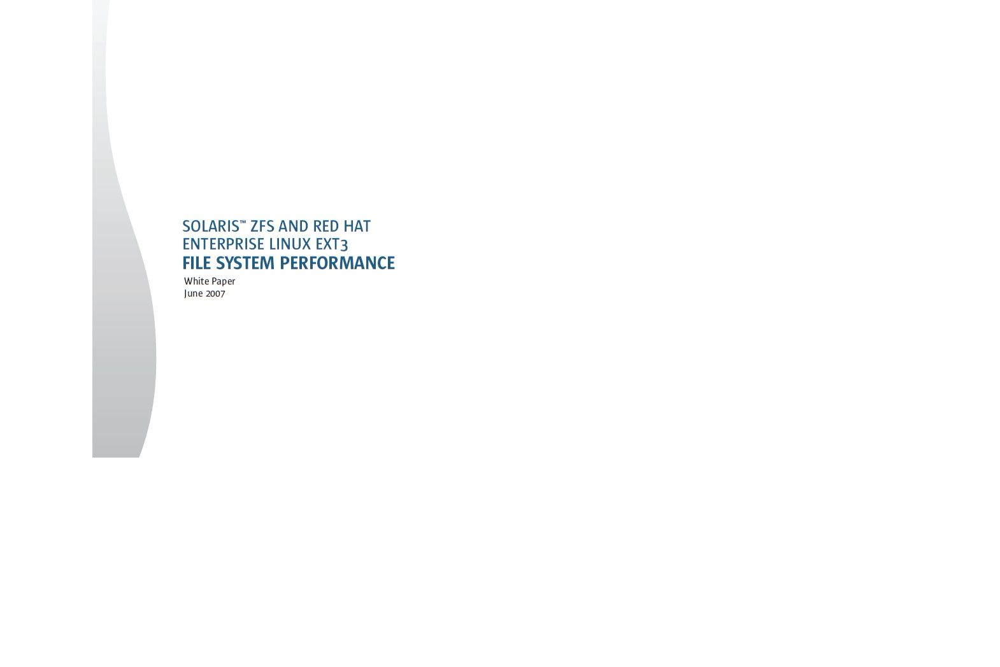

Past Papers, etc

Work on the works of others acknowledged
Current Project: Swift Coding
To employ Swift, Xcode and Objective C on the Mac - and create an app for my iPhone that encapsulates Wireshark-like functionality to monitor the surrounding wifi environment.
Resources
Version 1.2
Mactivities
Creating Software Products for the Mac Platform
Xcode Downloads @ iTunes
Swift Intro to Swift
Xcode downloads at swift.org
plop
plop
Also
Microsoft courses on stuff that isn't even Microsoft
and
EdX courses
. ToDo Explore Xcode and dtrace (a.k.a "Instruments"- see xcode wikipedia page.